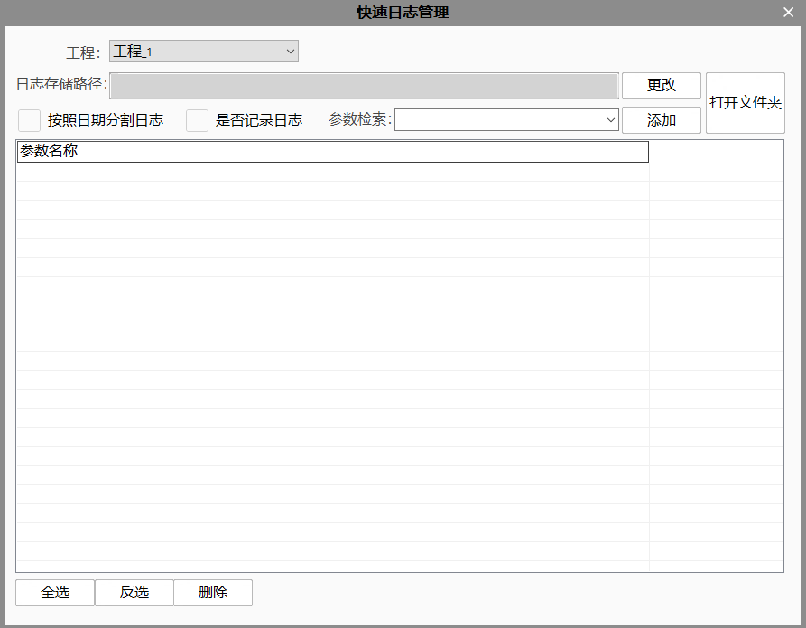

可以快速配置记录工具的运行状态、运行时间、字符串参数，供记录工程关键工具运行状态使用。

参数检索支持快速检索操作，输入工具或参数名称含有的字符即可快速定位参数全名。选择全名后点击添加按钮即可将所需要记录参数添加到日志记录参数列表中。点击更改按钮唤出保存窗口选择文件日志文件记录位置，选中是否记录日志复选框，即可启用日记记录功能。
| 参数名称 | 参数说明 |
|---|---|
| 工程 | 当前日志管理器对应的工程名称 |
| 日志存储路径 | 当前工程的快速日志记录的文件路径 |
| 按照日期分割日志 | 选中：日志名称添加日期作为标识，分割日志。 非选中：日志全部记录到一个文件中 |